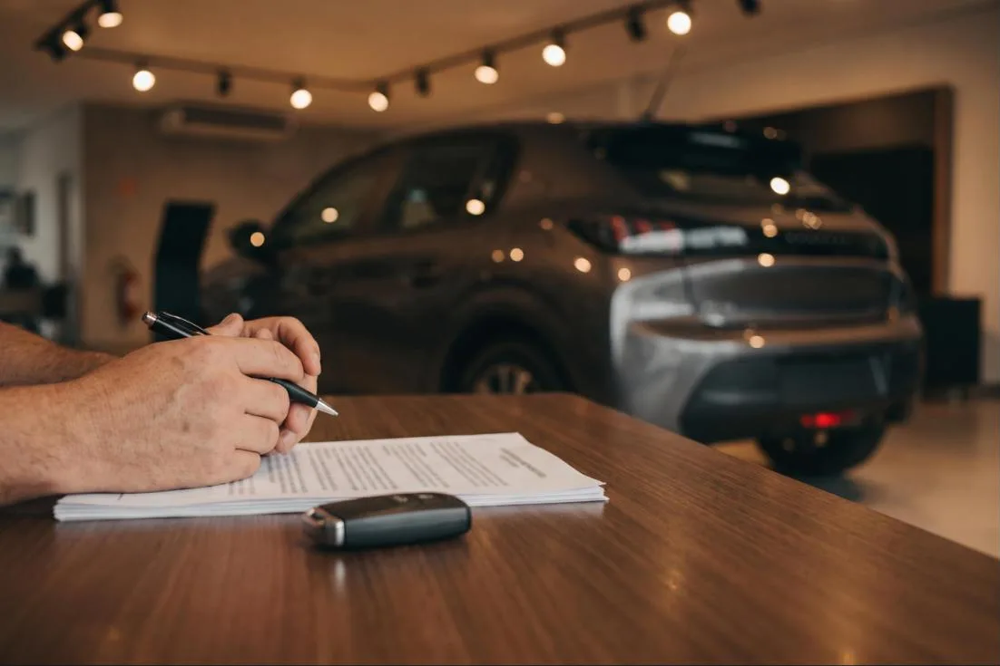

Prioridade do escritório
Revisão de financiamento de veículos
Análise do contrato do carro ou da moto: taxa de juros, Custo Efetivo Total (CET), tarifas, seguros e forma de cálculo das parcelas, para verificar se há valores que possam ser questionados.